10. Exoplanets#
Jun 06, 2026 | 11230 words | 56 min read
How to use this chapter
This chapter connects the physics of stars to the practical search for habitable worlds. Focus on three questions as you read: what kinds of stars provide useful environments, how planets around other stars are detected and measured, and why a possible biosignature is not the same as confirmed life.
Exoplanets are planets orbiting stars other than the Sun. That definition sounds simple, but the discovery of exoplanets changed the course question from a philosophical possibility into an observational science. Ancient writers could imagine other worlds. Modern astronomers can now measure them, classify them, estimate their temperatures, and in a few special cases detect gases in their atmospheres.
This chapter is the bridge between the Solar System habitability chapters and the broader search for life in the galaxy. In Chapter 10 on habitability, we used Earth, Venus, Mars, Europa, Enceladus, and Titan to see why liquid water, atmosphere, energy, geology, and time all matter. Exoplanets force us to ask the same questions with much less information. We usually cannot visit these worlds. We often cannot even see them directly. We infer their existence from small changes in the light or motion of their stars.
That limitation is not a weakness of the science. It is the science. The exoplanet field is a lesson in how astronomers turn indirect evidence into physical understanding. We will begin with stars because every exoplanet is shaped by the star or stars it orbits. Then we will look at the major detection methods and the measurements they provide. Finally, we will ask which extrasolar worlds might be habitable and what kind of evidence could someday count as a biosignature.
10.1. Distant suns#
10.1.1. Stellar composition: mostly hydrogen, but life needs the trace ingredients#
Stars are born when gravity pulls interstellar gas and dust into a collapsing cloud. The composition of that cloud becomes the starting composition of the star. By mass, a typical star is mostly hydrogen and helium. A useful first approximation is about 75 percent hydrogen and 25 percent helium, with everything else making up only a small fraction of the total mass.
That small fraction matters enormously for astrobiology. Astronomers call all elements heavier than helium metals, even though this is broader than the way chemists use the word. Carbon, nitrogen, oxygen, phosphorus, and sulfur are metals in the astronomical sense. These are also the elements that appear repeatedly in terrestrial biochemistry. Earthlike life is not made from hydrogen and helium alone.
This connects directly to the earlier discussion of “star stuff” in Chapter 3. The early universe was mostly hydrogen and helium. Heavier elements were produced later by stellar evolution, supernovae, neutron-star mergers, and the gradual recycling of material through generations of stars. Very old stars formed when fewer previous generations of stars had enriched the interstellar medium, so they tend to be metal-poor. Stars that formed more recently, including the Sun, were born from clouds that had a larger inventory of heavier elements.
Planet formation also depends on this trace material. Gas alone does not easily build rocky planets. The first seeds of planets are solids: iron grains, silicate dust, ice particles, and other heavy-element-rich material. In our Solar System, only about 2 percent of the mass was in elements heavier than hydrogen and helium, but that was enough to build Mercury, Venus, Earth, Mars, asteroids, icy moons, and the heavy-element cores of giant planets. The exact minimum metal content needed to build terrestrial planets remains an active research topic, but the basic logic is clear: no metals, no rocks; no rocks, no Earthlike planets.
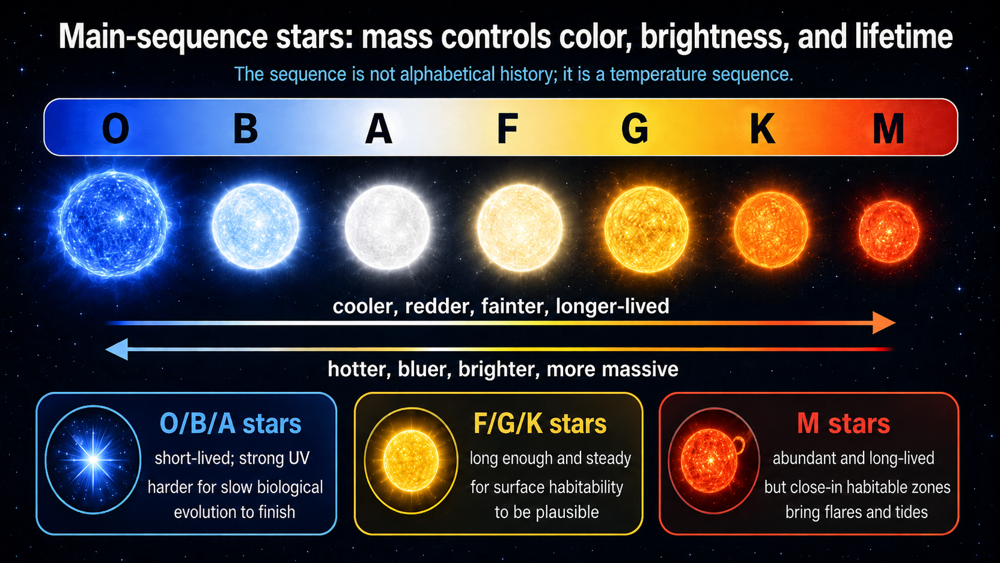
Fig. 10.1 This summary figure emphasizes the main astrobiology takeaway from the stellar spectral sequence. The OBAFGKM classes are ordered by temperature, but along the main sequence they also track color, luminosity, mass, and lifetime. For habitability, the key idea is that stellar mass changes the time available for evolution, the radiation environment, and the location of the habitable zone. Image credit: Instructor-created course media.#

Fig. 10.2 This more detailed chart shows what astronomers mean by stellar classification. In addition to the OBAFGKM sequence, it includes representative spectra, surface temperature ranges, hydrogen-line strengths, approximate stellar sizes, and how common each spectral class is. Together with the summary figure, it helps connect stellar classification to both stellar physics and the search for habitable worlds. Image credit: Pablo Carlos Budassi, via Wikimedia Commons, CC BY-SA 4.0.#
{kind=link}
Checkpoint
Why can a small percentage of “metals” matter more for planet formation than the much larger amount of hydrogen and helium?
For exoplanets, stellar composition is both a clue and a caution. A metal-rich star may have had more solid material available for planets, but a metal-poor star is not automatically planet-free. The old Kepler-444 system is a useful reminder: it contains multiple small planets around an ancient, metal-poor star. The existence of such systems keeps us from turning a reasonable trend into an absolute rule.
Metallicity also illustrates the difference between a population trend and a single-system prediction. If we compare thousands of stars, metal-rich stars are generally better places to look for giant planets, because giant planets require massive cores before the gas disk disappears. Terrestrial planets seem less tightly tied to metallicity. A star with fewer metals may still have enough solids to build small planets, especially if the local disk conditions were favorable. For astrobiology, this means metallicity is a useful search filter, not a yes-or-no test for habitability.
Dr. Nora’s Guide to the Galaxy
Watch from 1:10 to 4:36. This segment explains what astronomers mean by metallicity: not metal in the everyday sense, but the fraction of a star’s material made from elements heavier than hydrogen and helium. Focus on why those “metals” record earlier generations of stars and why they matter for building rocky planets, water, carbon chemistry, and the ingredients needed for Earth-like life.
10.1.2. Stellar mass controls color, luminosity, and lifetime#
Small differences in metal content usually have less effect on a star than mass does. All ordinary main-sequence stars spend most of their lives converting hydrogen into helium through nuclear fusion. The star’s mass controls the pressure and temperature in the core, which controls how rapidly fusion proceeds. A more massive star has stronger gravity, a hotter core, a higher fusion rate, and a much larger luminosity.
There is a minimum mass for sustained hydrogen fusion. Below that limit, the collapsing object never becomes hot enough in its core to fuse ordinary hydrogen steadily. Such an object is called a brown dwarf. Brown dwarfs are sometimes described as “failed stars,” although that phrase should not be taken too literally. They can fuse deuterium for a while if they are massive enough, and they can host disks or companions, but they do not settle into the long hydrogen-fusing phase that defines a main-sequence star.
There is also an upper practical limit to stellar mass. Very massive stars generate so much energy that radiation pressure becomes a serious part of the force balance. The star pushes outward on itself intensely. Above the most massive observed stars, stable formation becomes difficult because internal radiation pressure and powerful stellar winds fight against continued growth.
From the outside, we classify main-sequence stars using their spectra and colors. Hotter stars look bluer. Cooler stars look redder. The modern spectral sequence is O, B, A, F, G, K, M. O-type stars are the hottest and most luminous. M-type stars are the coolest and faintest. The Sun is a G-type star, which places it between the hotter F stars and cooler K stars.
The lifetime difference is the key astrobiology issue. Massive O and B stars burn through their hydrogen fuel quickly, sometimes in only millions of years. That may be long by human standards, but it is short compared with the time needed for planet formation, climate stabilization, and biological evolution on Earth. Low-mass M stars burn fuel slowly and can remain on the main sequence far longer than the current age of the universe. They are also the most common stars in the galaxy.
The best host stars for life are therefore not simply the brightest stars. A useful host star should contain enough heavy elements to build planets, shine steadily for at least about a billion years, maintain a habitable zone for long enough that a planet’s environment can matter, and allow planetary orbits to remain stable. G, K, and some M stars are especially important in current searches. F stars may also be possible hosts, but their stronger ultraviolet radiation and shorter lifetimes make them less comfortable candidates.
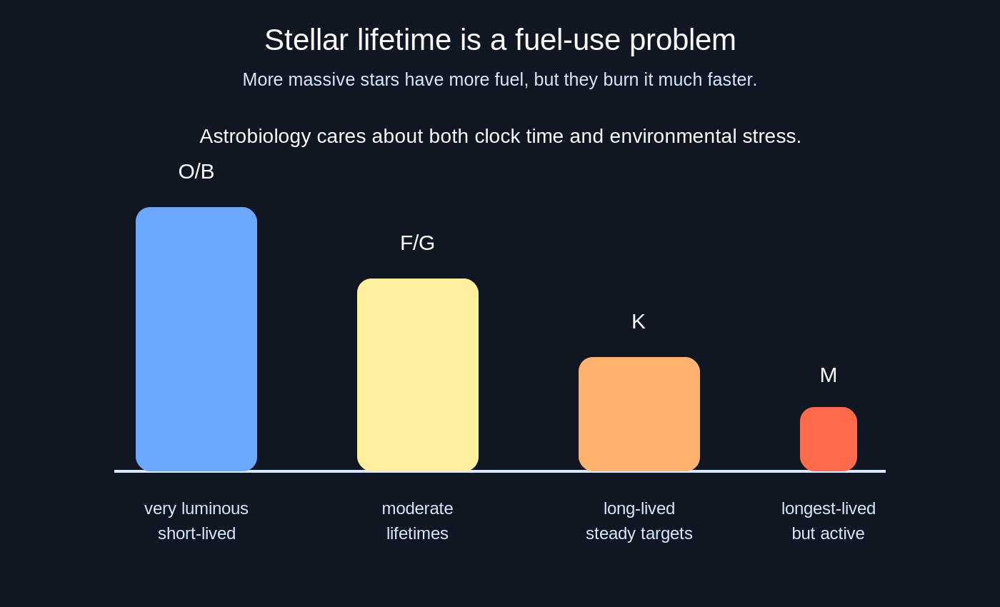
Fig. 10.3 Stellar lifetime is a fuel-use problem. More massive stars contain more fuel, but their higher core temperatures and pressures make fusion run much faster, so they burn through that fuel quickly. Very massive O- and B-type stars are bright and short-lived, often lasting only millions of years, which gives little time for slow biological evolution. Sunlike F- and G-type stars offer moderate lifetimes, K-type stars can provide longer-lived and relatively steady environments, and M-type stars can last the longest but often bring stronger activity and close-in habitable zones. For astrobiology, the best host star is not simply the longest-lived one; it must provide enough time for life while also keeping the planetary environment reasonably stable. Image credit: Instructor-created course media.#

Fig. 10.4 This NASA infographic adds an important population-level perspective by comparing G, K, and M stars in terms of habitable-zone size, high-energy irradiation, relative abundance, and stellar longevity. It highlights why M dwarfs dominate the galaxy by number, why Sun-like G stars are less common and shorter-lived, and why K dwarfs are often discussed as especially promising targets in the search for life: they are more abundant than G stars, longer-lived, and generally less extreme than the most active M dwarfs. Image credit: NASA, ESA, and Z. Levy (STScI), via NASA Science: The Habitable Zone.#
Checkpoint
Why is a bright, massive star not automatically a better host for life than a dimmer, lower-mass star?
The abundance of low-mass stars also matters statistically. If roughly 90 percent of stars are lower-mass than the Sun, then even a modest chance of habitability around those stars could produce many possible targets. The problem is that M-star habitability is not a free gift. Their habitable zones are close to the star, where planets are more likely to become tidally locked and exposed to stellar flares. Their long lifetimes make them tempting targets, but their close-in environments require careful interpretation.
10.1.3. Classifying stars: spectra, history, and the H-R diagram#
The star letters OBAFGKM look arbitrary because the final order is the product of history. In the late nineteenth century, the Harvard College Observatory became a center for stellar spectroscopy. Henry Draper had collected stellar spectra, and after his death Edward Pickering continued the project with support connected to Draper’s estate. Pickering employed a group of women research assistants who became known as the Harvard Computers.
Williamina Fleming classified thousands of spectra by the strength of hydrogen absorption lines. In that first system, A stars had the strongest hydrogen lines, B stars were next, and other letters followed. Antonia Maury refined the ordering. Annie Jump Cannon reorganized the sequence into the form still used today: O, B, A, F, G, K, M. The result is not a ranking of importance. It is a temperature sequence.
By the early twentieth century, astronomers began combining stellar spectra with luminosity. Ejnar Hertzsprung and Henry Norris Russell independently recognized that stars occupy recognizable patterns when plotted by temperature and luminosity. The resulting Hertzsprung-Russell diagram, or H-R diagram, is one of the most important organizing tools in astronomy. Most hydrogen-fusing stars lie along the main sequence. Giant stars sit above the main sequence because they are very luminous for their temperatures. White dwarfs sit below it because they are faint but hot.
The H-R diagram is not only a classification chart. It is a map of stellar evolution. A star spends most of its life on the main sequence fusing hydrogen into helium. After the core hydrogen supply is depleted, the star changes structure. Low-mass stars like the Sun eventually expand into red giants, shed outer layers into space as a planetary nebula, and leave behind white dwarfs. High-mass stars can proceed through additional fusion stages and end as supernovae, leaving neutron stars or black holes. Neutron-star mergers are also a major source of the heaviest elements, including much of the gold in the universe.
For students, the H-R diagram can look backward at first because temperature usually decreases from left to right. Astronomers keep that convention because it preserves the historical connection with spectral type: O stars appear on the hot, blue, high-luminosity side, while M stars appear on the cool, red, low-luminosity side. Once that layout is familiar, the diagram becomes a compact way to read a star’s story. A point on the main sequence tells us roughly how hot, bright, massive, and long-lived the star is. A point off the main sequence tells us that the star is in a different evolutionary stage.
For planets, the main-sequence phase is the stable era. It is the interval when a star’s luminosity changes slowly enough that surface climates can persist over geologic time. Once a star leaves the main sequence, its luminosity, size, and spectrum change dramatically. Surface life on close planets would likely be extinguished. Subsurface life, if it depends mostly on internal planetary heat, might be less directly affected.
Use this segment as a visual companion to the H-R diagram. Focus on why the diagram is more than a star-color chart: it connects temperature, luminosity, size, and evolutionary stage in one picture.
Checkpoint
How does the H-R diagram help us connect a star’s present appearance to its future effect on orbiting planets?
This historical episode also matters for how science works. Stellar classification was not produced by one person staring at one star. It required a large dataset, repeated comparison, and a willingness to revise categories when the original scheme no longer captured the pattern in the evidence.
10.1.4. Stellar companions, birth neighborhoods, and stable orbits#
The Sun is single, but many stars are not. Surveys of nearby solar-type stars show that a little less than half are in multiple systems. Raghavan et al. (2010) found that the nearby sample is roughly 56 percent single systems and 44 percent multiple systems, with binaries making up the largest part of the multiple-star population. Our nearest stellar neighbors illustrate the point. Alpha Centauri is not one star, but a triple system: the Sunlike pair Alpha Centauri A and B plus the red dwarf Proxima Centauri.
Multiple stars matter because planets respond to both radiation and gravity. A second star can change the amount of light received by a planet. It can also disturb planetary orbits, limit where planets can remain stable, and truncate the disks in which planets form. The details depend strongly on the binary separation, eccentricity, and mass ratio. Many binaries are wide enough that planets can still orbit one star in a mostly familiar way. Close binaries require planets to orbit both stars or avoid the unstable region between them.
Stars are also usually born in groups. A molecular cloud can fragment into many stars, producing a birth cluster. The Sun almost certainly formed in a cluster before drifting away from its siblings. Crowded birth environments raise additional habitability questions. Nearby massive stars can explode as supernovae. Passing stars can disturb reservoirs of comets and possibly trigger impact episodes. These effects do not mean planets cannot form in clusters, but they remind us that a planet’s long-term environment includes more than its own star.
The binary-star case is especially important for this course because binary systems are common and because Quarles and collaborators have directly addressed orbital stability in such systems (Quarles et al. (2018), Quarles et al. (2020)). Three orbit classes are useful. In an S-type orbit, the planet orbits one star while the second star acts as a distant perturber. Alpha Centauri is the familiar example. In a P-type orbit, also called a circumbinary orbit, the planet orbits both stars; these are the real astronomical versions of “Tatooine” planets. In a T-type orbit, a planet shares the orbit of one star near a stable Trojan-like location.
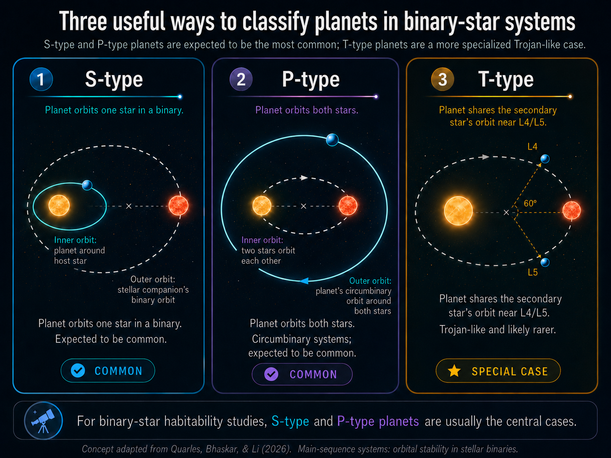
Fig. 10.5 Binary-star systems do not rule out planets, but they change the allowed real estate. S-type planets orbit one star, P-type planets orbit both stars, and T-type planets share the secondary star’s orbit near Trojan-like regions. Image credit: Instructor-created course media.#
Binary stars can truncate habitable zones in two ways. Gravity removes orbital real estate by making some orbits unstable. Radiation can also make the stellar flux vary with time. This connects directly to the habitable-zone discussion from Chapter 10: a planet may receive the right amount of energy for liquid water, but that does not help if the orbit itself cannot survive. For circumbinary planets, Yadavalli et al. (2020) showed that the changing stellar geometry can produce seasonal-like flux variations, although often at a modest level. For circumstellar S-type planets, the habitable zone around each star may be recognizable, but the companion star can force eccentricity. That forced eccentricity matters because high-eccentricity orbits move planets between hotter and colder parts of their orbit.
A stable orbit does not mean the planet retraces a perfect ellipse forever. It means the orbit remains bounded and avoids large chaotic growth in eccentricity or close encounters that would eject the planet or send it into a star. The slide phrase “the planet returns to about the same location in space” is a useful starting point, but binary systems make the idea more subtle. In a two-body problem, one star and one planet can follow a regular Keplerian ellipse. In a binary-star system, the planet feels the gravity of two moving stars. That extra moving gravitational pull can act like a repeated shove. A gentle periodic shove may only make the orbit breathe slightly. A stronger shove can pump up the eccentricity until the planet crosses a dangerous region, approaches one of the stars too closely, or is scattered out of the system.
This is why binary-star habitability is not just a temperature problem. It is also an orbital-stability problem. A planet in the habitable zone must remain there for long enough for climate, geology, and biology to matter. If the orbit becomes too eccentric, the planet may experience extreme changes in stellar heating. If the eccentricity grows even more, the planet may leave the habitable zone for much of its orbit or become dynamically unstable. In the most extreme cases, the planet can be ejected as a free-floating planet. This is the same basic scattering process discussed elsewhere in the chapter: gravity can move planets into new orbits, but it can also remove them from stable systems entirely.
For S-type planets, the stable region lies close to one star. The second star must be distant enough that its gravitational tugs remain a perturbation rather than a disruption. The wider the binary, the easier it is for each star to keep its own local zone of stable planetary orbits. The tighter or more eccentric the binary, the smaller the stable circumstellar region becomes. Eccentricity is especially important because a companion star on an eccentric orbit makes its closest approach at periastron. During those close passages, the companion star gives the planet its strongest gravitational kicks. Over many orbits, repeated kicks can drive mean-motion resonances or secular changes that increase the planet’s eccentricity. Quarles et al. (2020) showed that S-type stability depends on binary mass ratio, binary eccentricity, planetary semimajor axis, orbital inclination, and the planet’s starting orbital phase. As a rough population-level guide, their simulations found that circumstellar planets with semimajor axes of only a small fraction of the binary separation are the safest cases.
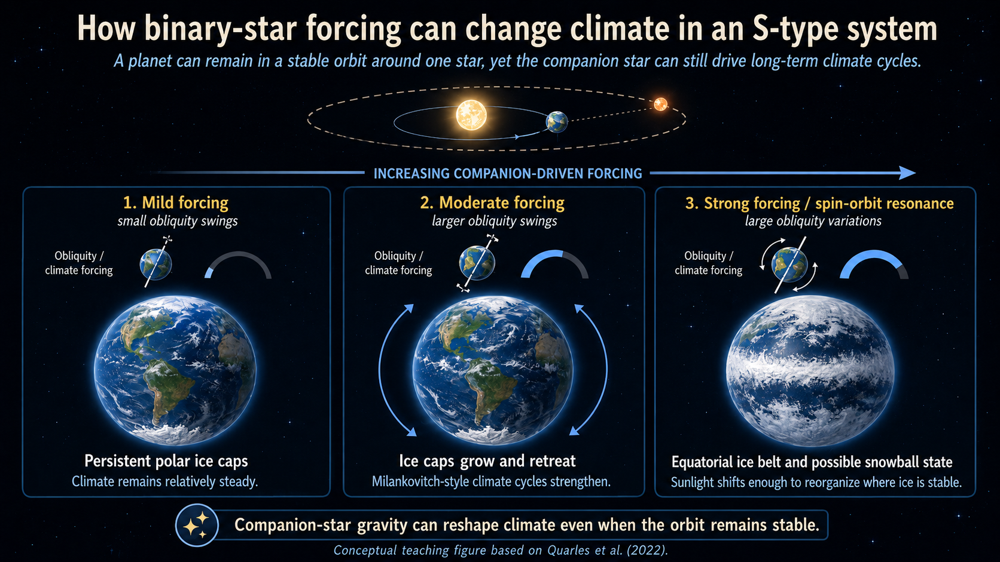
Fig. 10.6 This conceptual figure shows how a planet in an S-type binary system can remain in a stable orbit around one star while still experiencing long-term climate change driven by the companion star. As the companion’s gravitational forcing increases, obliquity variations can become larger, shifting the planet from relatively steady polar ice caps to stronger Milankovitch-style ice advance and retreat, and in extreme cases to equatorial ice belts or snowball-like states. This summary is based on the Alpha Centauri climate results of Quarles et al. (2022). A related caution is that large moons do not always stabilize obliquity variation: depending on the spin-orbit architecture, a moon can instead increase or destabilize obliquity cycling, as discussed by Quarles et al. (2019). Image credit: Instructor-created course media.#
For P-type planets, the stable region lies outside the close binary. A circumbinary planet orbits the center of mass of both stars, not either star individually. If the planet is too close to the binary, it does not feel a smooth central gravity field. Instead, it feels the two stars moving around each other, and that changing gravitational pattern can destabilize the orbit. Farther out, the two stars begin to act more like a single combined mass, so the planet can follow a more regular circumbinary orbit. The practical rule for this course is that a P-type planet generally needs to orbit at least about 2.25 times the binary separation from the system’s center of mass:
Here, \(a_{\rm bin}\) is the separation scale of the two stars in the inner binary, and \(a_p\) is the planet’s orbital distance measured from the binary’s center of mass. For example, if two stars orbit each other with a separation of 0.2 AU, then a circumbinary planet would generally need to orbit farther out than about \(2.25 \times 0.2\,{\rm AU}=0.45\,{\rm AU}\) to avoid the most unstable inner region. This is a rule of thumb, not a universal law. The exact stability boundary depends on the binary mass ratio, the binary eccentricity, the planet’s eccentricity, and the orbital inclination. Still, the \(2.5\,a_{\rm bin}\) rule captures the main idea: P-type planets need to stay well outside the rapidly changing gravitational field of the central binary.
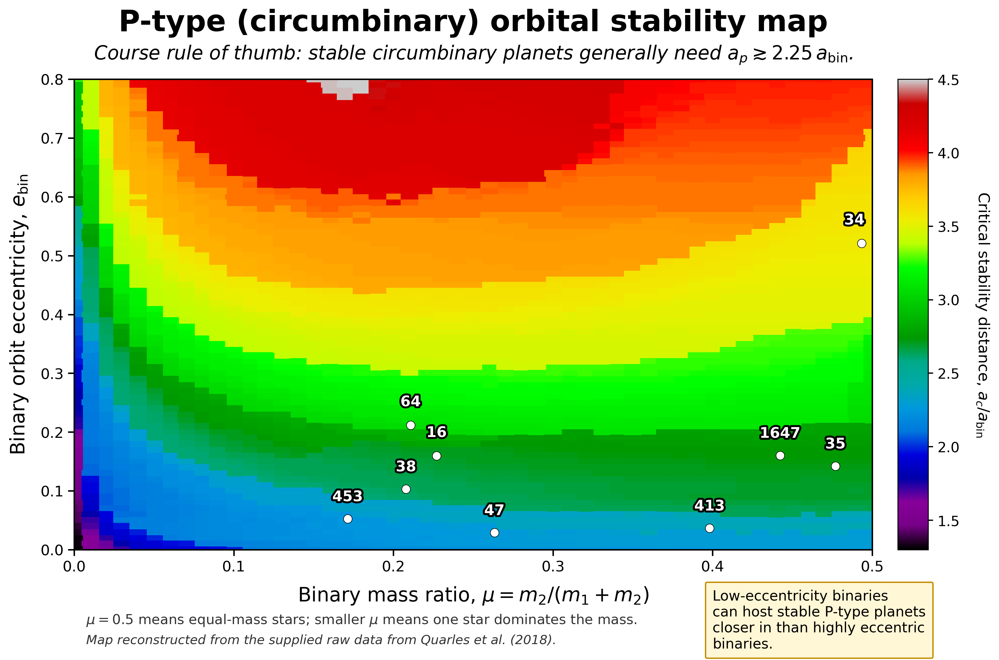
Fig. 10.7 This stability map shows where the common classroom rule of thumb for circumbinary planets comes from. The vertical axis gives the binary eccentricity \(e_{\rm bin}\), the horizontal axis gives the binary mass ratio \(\mu = m_2/(m_1+m_2)\), and the color scale shows the critical distance \(a_c\) in units of the binary separation \(a_{\rm bin}\). A stable P-type planet generally needs \(a_p \gtrsim a_c\), which for many low-eccentricity binaries is roughly \(a_p \gtrsim 2.25\,a_{\rm bin}\). As the binary becomes more eccentric, the inner edge of the stable circumbinary region moves farther outward. The labeled white points show observed Kepler circumbinary planets for comparison. Image credit: Instructor-created course media, reconstructed from the supplied raw data and based on Quarles et al. (2018).#
The boundary between stable and unstable orbits is not a sharp wall. Quarles et al. (2018) emphasized that circumbinary stability limits are “fuzzy” because resonances and initial conditions matter. Two planets with nearly the same average distance can have different outcomes if they begin at different orbital phases or if the binary has a different eccentricity. This is why the known Kepler circumbinary planets are so interesting. Many of them orbit near the inner stability boundary, but not necessarily exactly at it. Their locations record both dynamical survival and the formation or migration history of planets in circumbinary disks.
T-type orbits are more specialized. In this case, the planet shares the secondary star’s orbit near the L4 or L5 Lagrange regions, roughly 60 degrees ahead of or behind the secondary star. This is similar in spirit to Jupiter’s Trojan asteroids, which share Jupiter’s orbit around the Sun. T-type orbits are useful for classification, but they are less central for habitability in this chapter because they require a more restricted configuration and are not the main class of planets found in binary-star habitability studies.
The next layer is that the survival map and the temperature map are not fully separate. For planets in binaries, the most useful habitability question is not simply “Can planets exist?” We know they can. The better question is where planets can remain stable long enough for climate, geology, and biology to matter. A simulation lets us test many initial conditions and ask which regions survive for long times. In the search for habitable planets in binaries, that survival map is just as important as the temperature map.
Even when a planet remains dynamically stable, the second star can still shape the climate. In an S-type system, the planet orbits one star, so the companion star may contribute little direct light. Its gravity can still matter by forcing changes in the planet’s eccentricity, orbital plane, and spin-axis orientation. Those changes alter how sunlight is distributed across the planet over long timescales, producing Milankovitch-style climate cycles. On Earth, Milankovitch cycles help pace ice ages. In a binary system, the cycles can be stronger because the companion star adds an extra source of gravitational forcing.
Quarles et al. (2022) studied Earth-like planets in Alpha Centauri-like S-type systems and found that the outcome depends on the planet’s orbit, obliquity, spin precession, and which star it orbits. Some configurations keep persistent ice caps. Others can form an equatorial ice belt, where high obliquity makes the equator colder than the poles. In more extreme cases, ice can grow at both the poles and equator, raising the planet’s reflectivity and pushing the planet toward a snowball state. The lesson is that a planet can be in the habitable zone and still have a climate history that is strongly shaped by binary-star dynamics.
For P-type planets, the climate problem is different. A circumbinary planet orbits the center of mass of both stars, so the stars move around inside the planet’s orbit. The total light received by the planet changes as the two stars move closer to or farther from the planet. This motion of the inner binary is sometimes called binary gyration. Yadavalli et al. (2020) showed that circumbinary Earth analogs can receive time-variable flux even when the planet’s own orbit is nearly circular. The effect depends on the binary mass ratio, binary eccentricity, stellar luminosities, and the ratio between the planet’s orbit and the binary separation. Farther from the binary, the two stars behave more like one combined light source. Closer to the stability limit, the changing geometry becomes more important.
Kepler-16 Flux Variation
This animation shows how the top-of-atmosphere flux changes for an Earth-analog circumbinary planet in a Kepler-16-like system. The important point is that the planet can remain on a stable P-type orbit while still receiving time-variable stellar heating because the two stars move around inside the planet’s orbit. Animation credit: Instructor-created course media, based on the circumbinary flux-variation framework discussed by Yadavalli et al. (2020).
Checkpoint
A circumbinary planet orbits two stars separated by 0.4 AU. Using the course rule of thumb, about how far from the binary center of mass should the planet orbit to have a stable P-type orbit? Why is this distance larger than the binary separation itself?
This means that the \(2.5\,a_{\rm bin}\) stability rule is not just an orbital bookkeeping rule. A P-type planet must orbit far enough out to survive, but its distance from the binary also controls how strongly the binary’s changing geometry affects the climate. A planet near the inner stability boundary can experience larger short-term changes in stellar heating than a similar planet around a single star with the same total luminosity. Whether those changes matter biologically depends on the atmosphere, ocean coverage, ice-albedo feedback, and the timescale over which the climate can respond.
The main takeaway is that binary-star habitability has two filters. First, the planet must be in a stable orbit. Second, the surviving orbit must allow a climate that remains suitable over long timescales. A stable orbit is necessary, but it is not automatically enough.
10.2. Discovering exoplanets#
10.2.1. Why most exoplanet detections are indirect#
The central observational problem is contrast. A planet is usually faint and close to a bright star on the sky. Earth seen from far away would reflect roughly ten billion times less visible light than the Sun. Even a giant planet is usually overwhelmed by starlight. For most systems, we do not begin by seeing the planet. We begin by seeing what the planet does to the star’s light or motion.
There are five major detection methods in this chapter. Direct imaging tries to take a picture of the planet itself. Astrometry watches the star wobble on the sky. Radial velocity watches the star wobble toward and away from us using the Doppler shift. Transit photometry watches the star dim when a planet passes in front of it. Microlensing watches a temporary brightening caused by gravity bending the light of a background star. Each method is best understood as a different way of turning a tiny signal into a physical property. A method that is excellent for discovery is not always the best method for measuring mass, radius, temperature, or atmospheric composition. That is why the strongest exoplanet cases usually combine more than one technique.

Fig. 10.8 The major exoplanet detection methods all watch different evidence. Direct imaging is closest to a photograph, but most planets are found indirectly by stellar wobble, transits, timing variations, or gravitational lensing. Image credit: ESA, ESA Standard Licence.#
Direct imaging is conceptually simple but technically hard. A telescope must suppress the star’s light enough to reveal a faint planet nearby. Coronagraphs act like carefully engineered masks, blocking bright starlight in much the same way a car visor helps you see when the Sun is in your eyes. Young giant planets are easier direct-imaging targets because they still glow in infrared light from their formation heat.
The HR 8799 system is one of the benchmark direct-imaging systems. The original multi-planet direct-imaging discovery was reported by Marois et al. (2008). Webb has since provided updated coronagraphic observations of HR 8799, including detections of carbon dioxide in its giant planets. HR 8799 shows that direct imaging can become atmospheric characterization, not merely planet detection.
Animation: Roman Space Telescope Coronagraph
This NASA animation shows why direct imaging is so difficult. A planet can be present and still disappear in the glare of its host star. A coronagraph acts like an artificial eclipse, blocking the star’s bright light so a much fainter orbiting planet can be seen. Roman’s coronagraph is a technology demonstration, but the same basic idea is central to future efforts to directly image nearby exoplanets and eventually study their atmospheres. Animation credit: NASA’s Goddard Space Flight Center Conceptual Image Lab; visualization by Walt Feimer. Source: NASA Scientific Visualization Studio.
Checkpoint
Why are young giant planets easier to image directly than Earthlike planets around Sunlike stars?
Direct imaging is rare, but it is powerful. It favors wide-orbit, young, massive planets, so it does not give a representative census of all planets. But when it works, it can reveal planets at orbital distances that transit and radial-velocity surveys may miss.
10.2.2. Stellar wobble: astrometry and radial velocity#
A star and planet both orbit their common center of mass. The planet usually travels along the larger path, but the star also moves. Newton’s third law is the underlying physics: the gravitational force of the star on the planet is matched by the gravitational force of the planet on the star. The star’s motion is smaller because the star is much more massive, but it is not zero.
Astrometry measures the star’s motion across the sky. If we could watch the Sun from a nearby star, Jupiter would make the Sun move around the Solar System center of mass with a period of about 12 years. Other planets add smaller wobbles. Astrometry is difficult because the angular shifts are tiny, but the Gaia mission has made this method far more powerful than it used to be.
Radial velocity measures motion along our line of sight. As a star moves toward us, its spectral lines shift slightly toward shorter wavelengths, a blueshift. As it moves away, they shift toward longer wavelengths, a redshift. The repeating pattern reveals the orbital period of the planet. This method was crucial in the first discoveries of planets around Sunlike stars, especially hot Jupiters.
Hot Jupiters were surprising because giant planets in our Solar System orbit far from the Sun. A Jupiter-mass planet orbiting close to its star produces a large stellar wobble and a short-period signal, making it easier to detect with early radial-velocity surveys. That selection effect shaped the first impression of exoplanet systems. At first, many systems seemed nothing like the Solar System. Later missions revealed that smaller planets and compact multiplanet systems are also common.
This NASA video is useful here because it turns the Doppler idea into a visual signal. Focus on how the star’s spectrum changes because the star is moving, not because the planet is directly visible.
Checkpoint
Why does radial velocity usually give a minimum planet mass rather than the true mass by itself?
The inclination problem is the major limitation. If the orbit is tilted relative to our view, radial velocity measures only the component of the star’s motion along our line of sight. Astronomers usually report a minimum mass, often written as \(M\sin i\). The true mass is larger if the inclination angle is smaller. Statistically, most randomly oriented orbits are not extremely face-on, so the minimum mass is often useful, but it is still not the same as a direct mass measurement.
10.2.3. Transits, microlensing, and what repeated events teach us#
The transit method detects a planet when it crosses in front of its star from our point of view. The planet blocks a small fraction of the starlight, producing a dip in the light curve. The size of that dip tells us the ratio between the planet radius and the stellar radius. Because the planet and star are essentially overlapping circles on the sky, the basic relationship is simple: the transit depth is approximately \((R_p/R_*)^2\).
Transits require a fortunate alignment. Most planets do not transit from our point of view. But if a planet does transit, the geometry is extremely valuable. The orbit must be nearly edge-on, so the inclination is close to \(90^\circ\). That reduces the mass ambiguity if radial-velocity data are also available. Transits also provide the planet’s radius, which radial velocity alone cannot measure.
Kepler made the transit method statistically transformative. It stared at about 150,000 stars for roughly four years and looked for repeated dips. TESS uses the same basic method but surveys bright nearby stars across the sky, providing targets that are easier to follow up. Current catalog numbers change as candidates are confirmed, so the chapter uses the NASA Exoplanet Archive rather than a static slide number when a current count is needed.
Microlensing is different. It depends on gravity bending light from a background star. If a foreground star with a planet passes nearly in front of that background star, the foreground gravity can briefly magnify the background light. A planet can add a small extra feature to the brightening pattern. Microlensing is powerful because it can find planets at larger orbital distances and even free-floating planets, but each event is usually a one-time alignment. It is much harder to revisit the same planet later.
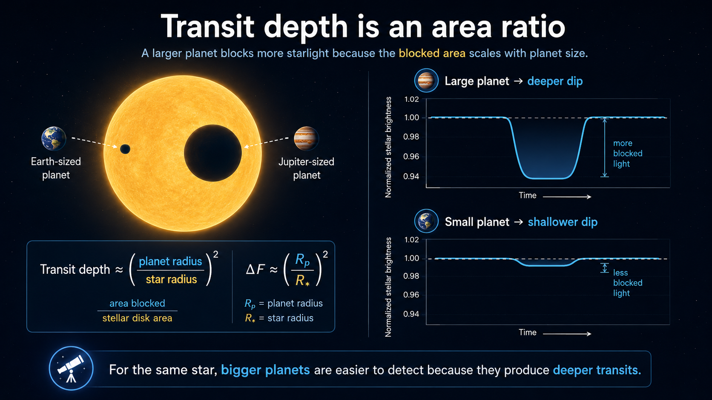
Fig. 10.9 Transit photometry is powerful because a planet’s shadow carries geometric information. A larger planet hides more of the stellar disk and produces a deeper dip, while an Earth-sized planet around a Sun-sized star produces a much smaller signal. Image credit: Instructor-created course media.#
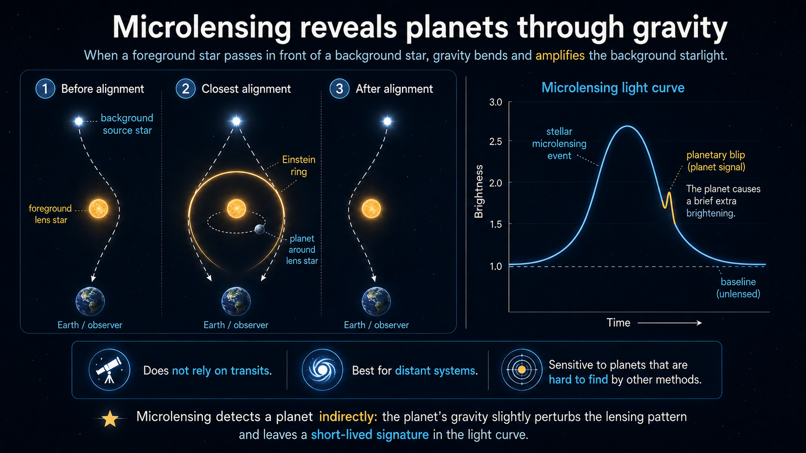
Fig. 10.10 Microlensing detects planets indirectly through gravity rather than through the planet’s own light or shadow. When a foreground lens star passes nearly in front of a more distant background star, the lens star’s gravity bends and amplifies the background starlight. A planet orbiting the lens star can add a brief extra brightening, or planetary blip, to the microlensing light curve. This method does not require a transit, works especially well for distant systems, and can reveal planets that are difficult to find by other methods. Image credit: Instructor-created course media.#
Try the numbers
A transit depth is approximately the area ratio between the planet and the star: \(\delta \approx (R_p/R_*)^2\). The Sun is about 109 Earth radii, and Jupiter is about 11.2 Earth radii. The code cell below compares an Earth transit and a Jupiter transit across a Sun-sized star.
# Transit depth estimates for planets crossing a Sun-sized star.
sun_radius_earth = 109.0 # radius of the Sun in Earth radii
earth_radius_earth = 1.0 # radius of Earth in Earth radii
jupiter_radius_earth = 11.2 # radius of Jupiter in Earth radii
earth_depth = (earth_radius_earth / sun_radius_earth)**2 # fractional dimming for Earth
jupiter_depth = (jupiter_radius_earth / sun_radius_earth)**2 # fractional dimming for Jupiter
print(f"An Earth transit across a Sun-sized star blocks about {100*earth_depth:.3f}% of the starlight.")
print(f"A Jupiter transit across a Sun-sized star blocks about {100*jupiter_depth:.2f}% of the starlight.")
print(f"The Jupiter transit signal is about {jupiter_depth/earth_depth:.0f} times larger than the Earth transit signal.")
An Earth transit across a Sun-sized star blocks about 0.008% of the starlight.
A Jupiter transit across a Sun-sized star blocks about 1.06% of the starlight.
The Jupiter transit signal is about 125 times larger than the Earth transit signal.
The lesson from this calculation is not just that transits are small. It is that small planets require extremely precise photometry. A Jupiter-sized planet can produce a dip around one percent for a Sunlike star. Earth produces a dip of only about one hundredth of a percent. That difference helps explain why the earliest transit discoveries favored large close-in planets and why Kepler’s precision changed the field.
10.2.4. Measuring exoplanet properties#
Detection is only the beginning. The astrobiology question requires physical properties: orbital period, orbital distance, eccentricity, mass, radius, density, temperature, and atmospheric composition. Different methods provide different pieces of the puzzle.
The orbital period is often the easiest property. Astrometry, radial velocity, and transits all produce repeating signals when the planet completes an orbit. Once the period is known, the orbital distance can be estimated using Newton’s version of Kepler’s third law. In convenient units for a planet orbiting one star, \(a^3 \approx M_*P^2\), where \(a\) is in astronomical units, \(P\) is in years, and \(M_*\) is the stellar mass in solar masses. The catch is that the stellar mass must be estimated independently, usually from stellar spectra and models.
Orbital eccentricity tells us how stretched the orbit is. Eccentric planets move faster near closest approach and slower when farther away. In radial-velocity data, high eccentricity can make the velocity curve more sharply peaked. In transit data, eccentricity can affect the timing and shape of the event. Habitability discussions care about eccentricity because a very eccentric planet may experience extreme changes in stellar heating over each orbit.
Mass is often measured from gravitational effects: radial velocity, astrometry, or transit timing variations. Transit timing variations occur when planets in the same system tug on each other, causing transits to happen slightly early or late. TRAPPIST-1 is a famous example where timing variations help constrain masses in a compact system.
This NASA video is useful here because it turns the Doppler idea into a visual signal. Focus on how the star’s spectrum changes because the star is moving, not because the planet is directly visible.
Mass measurements are especially important because many planet names are misleading. A “super-Earth” is not necessarily Earthlike; it may simply be more massive than Earth. A “mini-Neptune” is not necessarily a small copy of Neptune; it may describe a planet with enough low-density gas or volatiles to inflate its radius. Without mass, a radius tells us size but not composition. Without radius, a mass tells us gravity but not whether the planet is compact or puffy.
Radius is best measured by transits. The planet’s radius comes from the transit depth and the star’s radius. This is why improved stellar radii matter. If the star’s radius is uncertain by 10 percent, the planet’s radius inherits that uncertainty. Gaia has improved stellar distances and therefore stellar radius estimates for many systems, sharpening planet measurements.
Once mass and radius are both known, we can estimate bulk density. Density is a blunt tool, but it is powerful. A planet with Earthlike density is probably dominated by rock and iron. A planet with Neptune-like density likely has a significant volatile envelope. A very low-density planet may have an extended hydrogen-rich atmosphere.
Temperature is harder because a planet does not have one single temperature. A directly imaged young giant planet may glow in infrared because it is still hot from formation. A close-in planet may absorb starlight on its dayside and reradiate that energy in infrared. If the planet is tidally locked, the dayside and nightside can have very different temperatures. Observing infrared light over an orbit can therefore reveal heat redistribution, not just a single number. For habitability, that distinction matters because an atmosphere or ocean can transport heat and reduce extremes.
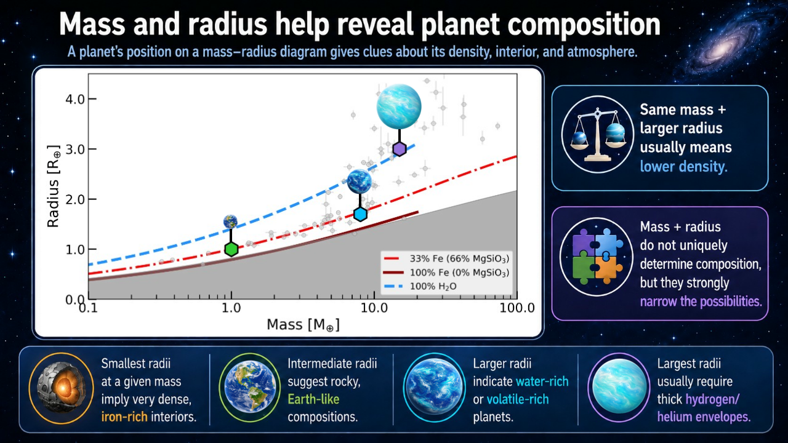
Fig. 10.11 Mass and radius do not uniquely determine a planet’s composition, but together they strongly narrow the possibilities. Dense planets fall closer to iron-rich or rocky composition curves, while larger radii at the same mass point toward lower-density materials such as water, volatile layers, or hydrogen-helium envelopes. The example planets show an Earth-analog, a larger rocky or water-rich super-Earth, and a lower-density mini-Neptune. Figure created by the instructor using mr-plotter, with additional instructor-created course media added for visual interpretation.#
Try the numbers
A simple density comparison can distinguish a rocky planet from a volatile-rich one. If mass is measured in Earth masses and radius in Earth radii, the density relative to Earth’s density is \(\rho/\rho_\oplus = M/R^3\).
Spectra add another layer. A star’s spectrum tells us about the star’s temperature and composition. During a transit, a tiny fraction of starlight passes through the planet’s atmosphere before reaching the telescope. Molecules in the atmosphere absorb particular wavelengths, so subtracting the star-only spectrum from the in-transit spectrum can reveal atmospheric gases. This is the technique that makes K2-18 b such an important case study later in the chapter.
# Bulk density relative to Earth's density for two example planets.
earth_density = 5.51 # density of Earth in g/cm^3
super_earth_mass = 5.0 # example planet mass in Earth masses
super_earth_radius = 1.5 # example planet radius in Earth radii
mini_neptune_mass = 5.0 # example planet mass in Earth masses
mini_neptune_radius = 2.5 # example planet radius in Earth radii
super_earth_density = earth_density * super_earth_mass / super_earth_radius**3
mini_neptune_density = earth_density * mini_neptune_mass / mini_neptune_radius**3
print(f"A 5 Earth-mass planet with a 1.5 Earth-radius size has a density of {super_earth_density:.1f} g/cm^3.")
print(f"A 5 Earth-mass planet with a 2.5 Earth-radius size has a density of {mini_neptune_density:.1f} g/cm^3.")
print("The same mass can imply a very different planet if the radius is different.")
A 5 Earth-mass planet with a 1.5 Earth-radius size has a density of 8.2 g/cm^3.
A 5 Earth-mass planet with a 2.5 Earth-radius size has a density of 1.8 g/cm^3.
The same mass can imply a very different planet if the radius is different.
Spectra add another layer. During a transit, a tiny fraction of starlight passes through the planet’s atmosphere before reaching the telescope. Molecules in the atmosphere absorb light at particular wavelengths. By comparing the filtered light during transit with the star’s light alone, astronomers can infer atmospheric gases. For hot or directly imaged planets, infrared emission can also help estimate temperature. Secondary eclipses and phase curves can reveal day-night temperature differences, especially for tidally locked close-in planets.
Checkpoint
Why is the combination of mass and radius more informative than either measurement alone?
The recurring theme is combination. No single measurement gives the full planet. Period and stellar mass give orbital distance. Transit depth and stellar radius give planet radius. Wobble or timing variations give mass. Spectra give atmospheric clues. Habitability arguments become stronger when several independent measurements point in the same direction.
10.3. Number and nature of exoplanets#
10.3.1. Planet statistics and observational bias#
The confirmed exoplanet count is now in the thousands. The NASA Exoplanet Archive listed 6,291 confirmed planets on May 21, 2026, along with 895 confirmed TESS planets and 7,931 TESS project candidates. Those numbers are impressive, but they are still a tiny sample compared with the roughly 100 billion stars in the Milky Way.
To make general statements, astronomers use statistics. The Kepler mission is central because it observed a large sample of stars with a well-understood detection strategy. The sample was not perfect. Kepler observed for only about four years, so short-period planets had more chances to transit repeatedly. Small planets were harder to detect than large planets. Long-period planets were undercounted. The chosen field also had its own stellar population biases, including many older stars and relatively fewer obvious binaries.
Bias is not the same as failure. Bias is something to model. If a survey is more likely to detect large close-in planets, then the raw discovery list will overrepresent large close-in planets. Astronomers correct for those selection effects to infer the underlying population. After those corrections, the main lesson is that planets are common. The slide-deck numbers are good order-of-magnitude guideposts: more than 70 percent of stars appear to have at least one planet, more than 17 percent have an Earth-sized planet, and roughly 20 percent of stars may have a planet smaller than about two Earth radii within the habitable zone. Those percentages depend on survey corrections, but they capture the important shift: exoplanets are not rare exceptions.

Fig. 10.12 TESS surveys the sky in sectors and searches for tiny dips in the light of bright nearby stars. This updated NASA SVS mosaic is selected over older TESS-by-the-numbers graphics because it visually connects the survey geometry to thousands of confirmed and candidate worlds. Blue dots mark confirmed planets and orange dots mark candidates as of the September 2025 mosaic. Image credit: NASA Scientific Visualization Studio, NASA/MIT/TESS and Veselin Kostov (University of Maryland College Park); NASA media.#
Checkpoint
Why does a survey that misses many small or long-period planets still help us estimate how common planets are?
The result is not that every star has an Earth twin. The result is more careful: planets are common enough that the search for potentially habitable worlds is no longer speculative. The difficult part is moving from planet occurrence to planet environment.
10.3.2. Exoplanet systems do not have to look like the Solar System#
The Solar System has small rocky planets inside and giant planets outside. Many early exoplanet discoveries looked nothing like that. Radial-velocity surveys found giant planets very close to their stars and planets on highly eccentric orbits. Some of that was observational bias: close-in massive planets are easier to detect. But bias does not explain everything. The exoplanet population really is diverse.
Migration is one reason. Giant planets likely form in gas-rich disks, and interactions with the disk or with other planets can move them. A planet that formed farther out can migrate inward. Close encounters among planets can scatter planets onto eccentric orbits, push them into their stars, or eject them from the system as rogue planets. Compact multi-planet systems can also form, with several planets orbiting closer to the star than Mercury orbits the Sun.
This diversity forces a shift in thinking. The Solar System is not the template that every system must follow. It is one outcome of planet formation. Exoplanets include hot Jupiters, super-Earths, mini-Neptunes, water-rich or volatile-rich worlds, circumbinary planets, and compact systems unlike anything nearby.
Interactive: Explore the Exoplanet Catalog
NASA’s Exoplanet Catalog lets you explore confirmed planets by discovery method, planet type, mission, and system. Use it to test one idea from this section: the planets we know best are not necessarily the planets that are most common. They are the planets our detection methods are best at finding.
Try filtering by discovery method. Then compare the kinds of planets found by transits, radial velocity, direct imaging, and microlensing.
Physical classification depends heavily on mass and radius. Terrestrial planets are mostly rock and metal. Jovian planets are dominated by large gas envelopes. Between those familiar categories lies a major exoplanet population: super-Earths and mini-Neptunes. A super-Earth is more massive than Earth but not necessarily more habitable. A mini-Neptune is smaller than Neptune but may still have a deep hydrogen-rich atmosphere. These planets are common in the galaxy but absent from our Solar System, which makes them scientifically important and pedagogically tricky.
The phrase “water world” also requires care. In exoplanet contexts, it may refer to a planet with a large fraction of water or volatiles, but that does not guarantee a pleasant ocean surface. Water can be high-pressure ice, supercritical fluid, steam, or part of a thick volatile envelope. Habitability depends on pressure, temperature, chemistry, and whether any liquid layer is accessible to energy and nutrients.
A useful working classification for this chapter is therefore three broad groups rather than two: terrestrial planets, super-Earth/mini-Neptune planets, and Jovian planets. The middle group is the hard one. A planet in that size range may be mostly rocky, mostly volatile-rich, or wrapped in a large hydrogen atmosphere. K2-18 b matters later in this chapter because it lives in exactly this awkward middle region.
Use this video to reinforce the idea that exoplanet surveys are not simply looking for Solar System copies. Focus on how detection bias and real planetary diversity both shape the exoplanet catalog.
Checkpoint
Why should we be cautious about using Solar System categories as the only categories for exoplanets?
For the search for life, diversity is both exciting and inconvenient. It expands the range of possible habitats, but it also means that planet size alone cannot tell us whether a world is Earthlike.
10.4. Habitability of exoplanets#
10.4.1. Earthlike surface candidates#
The most straightforward habitable exoplanet candidate is a rocky planet with an atmosphere, surface liquid water, and an orbit within the star’s habitable zone. “Straightforward” does not mean “easy to find,” and it certainly does not mean “inhabited.” It means the planet resembles the kind of surface environment where Earthlike life is easiest for us to imagine and easiest, in principle, to detect remotely.
A planet smaller or less massive than Mars is a poor candidate for long-term surface habitability because it has difficulty retaining a substantial atmosphere. Mars itself shows the problem. It was once warmer and wetter, but it could not maintain a stable surface climate over billions of years. Earth-sized planets and somewhat larger rocky planets are better candidates because they are more likely to retain internal heat, support long-lived geology, and hold atmospheres.
The habitable zone remains useful, with caveats. It identifies where an Earthlike planet could maintain surface liquid water under plausible atmospheric conditions. A planet on a very eccentric orbit may spend too much time in extreme heating and cooling, although an atmosphere or ocean can buffer temperature swings. Low eccentricity is usually better for surface habitability.
The phrase Earthlike should be read narrowly here. It does not mean a planet has continents, oxygen, forests, animals, or a blue sky. It means the planet is plausibly rocky, has enough atmosphere to regulate surface conditions, and receives a stellar energy flux compatible with surface liquid water. Early Mars may be a better comparison than modern Earth for many young habitable-zone planets: rocky, possibly wet, but not necessarily stable over billions of years.
Try the numbers
For a simple estimate, the Earth-equivalent orbital distance scales as \(a \approx \sqrt{L_*}\), where \(L_*\) is the star’s luminosity in solar units and \(a\) is in AU. This does not replace climate modeling, but it shows why brighter stars have more distant habitable zones and dimmer stars have close-in habitable zones.
# Simple Earth-equivalent distance for different stellar luminosities.
f_luminosity = 4.0 # example F-type star luminosity in solar luminosities
g_luminosity = 1.0 # Sun's luminosity in solar luminosities
m_luminosity = 0.01 # example M-type star luminosity in solar luminosities
f_distance = f_luminosity**0.5 # Earth-equivalent distance in AU
g_distance = g_luminosity**0.5 # Earth-equivalent distance in AU
m_distance = m_luminosity**0.5 # Earth-equivalent distance in AU
print(f"A star with 4 times the Sun's luminosity has an Earth-equivalent distance of about {f_distance:.1f} AU.")
print(f"A Sunlike star has an Earth-equivalent distance of about {g_distance:.1f} AU.")
print(f"A star with 0.01 times the Sun's luminosity has an Earth-equivalent distance of about {m_distance:.2f} AU.")
A star with 4 times the Sun's luminosity has an Earth-equivalent distance of about 2.0 AU.
A Sunlike star has an Earth-equivalent distance of about 1.0 AU.
A star with 0.01 times the Sun's luminosity has an Earth-equivalent distance of about 0.10 AU.
This simple calculation explains much of the M-star habitability debate. A dim star’s habitable zone is close in. Close-in planets are easier to detect by transits, because they orbit frequently, but they may also be tidally locked and exposed to stronger stellar activity. The same geometry that helps us find them can make their environments challenging.
Checkpoint
Why does the habitable zone distance depend on stellar luminosity rather than only on the name of the spectral type?
The best current targets are not chosen by one criterion. A promising target needs a suitable star, a stable orbit, a plausible atmosphere, and measurements good enough to test those ideas. Habitability is not a label we apply from distance alone.
10.4.2. Exomoons, massive worlds, and subsurface habitats#
Moons complicate the habitable-zone picture. A large moon in the habitable zone could, in principle, maintain an atmosphere and surface liquid water. The Earth-Moon pair shows that large moons can exist, but the Moon is not large enough to be an Earthlike world. A giant impact involving a larger planet might create a larger moon, but simulations by Nakajima and collaborators suggest that sufficiently massive impact-generated disks can become too vapor-rich to form fractionally large moons efficiently.
Another idea is to move an icy moon into the habitable zone by migrating its giant planet inward. Imagine a Europa-like moon around a giant planet. If the planet migrates into the habitable zone, ice could melt and the host planet’s magnetic field might help protect the moon. The problem is dynamics. Spalding et al. (2016) showed that moons are likely to be lost during the migration process. The attractive story does not survive the orbital mechanics.
A third idea is to form a giant planet with large moons directly in the habitable zone, avoiding migration. But Canup & Ward (2006) found that regular satellite systems tend to be limited to about \(10^{-4}\) of the host planet’s mass. To make an Earth-mass moon by that route, the host would need to be so massive that it is closer to a brown dwarf than an ordinary planet.
Massive planets also change atmospheres. A planet with stronger gravity can hold a thicker atmosphere, including hydrogen captured from the nebula or large amounts of water vapor. A thick greenhouse atmosphere can push the outer edge of the habitable zone outward. Kopparapu et al. (2014) explored how planet mass affects habitable-zone limits, but the benefit is not unlimited. Very massive planets can have surface pressures too high for familiar surface habitability.
Subsurface habitability is another escape from the classical habitable zone. Mars, Europa, and Enceladus remind us that life does not have to live on a sunlit surface. Internal heat, radioactive decay, tides, and hydrothermal chemistry can keep water liquid below the surface. Super-Earths may retain more internal heat than Mars and could maintain subsurface water for longer.
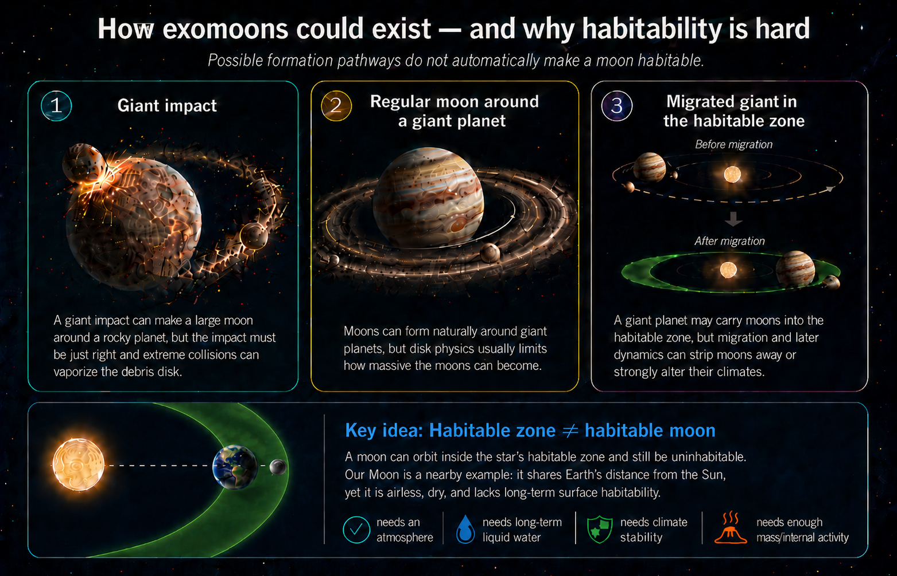
Fig. 10.13 Large habitable exomoons are possible in principle, but each formation pathway has a bottleneck. Giant impacts can make large moons, but the impact must be just right; regular moons form naturally around giant planets, but their masses are limited by circumplanetary disk physics; and migrating giant planets could carry moons into the habitable zone, but migration can scatter moons away or strongly alter their climates. The bottom panel emphasizes a separate habitability point: being located in the star’s habitable zone is not enough by itself. Our Moon shares Earth’s distance from the Sun, but it is airless, dry, and lacks the long-term surface conditions needed for Earthlike habitability. Image credit: Instructor-created course media.#
Checkpoint
Why might subsurface habitability be common but difficult to detect around exoplanets?
The difficulty is observational. A subsurface biosphere on an exoplanet could be invisible to us for the foreseeable future. Even in our own Solar System, Mars and Europa require spacecraft investigations. For exoplanets, remote sensing mostly accesses surfaces and atmospheres. That means our search is biased toward life that changes something visible from far away.
10.4.3. Free-floating planets and the question of whether a star is required#
A free-floating planet is a planetary-mass object that does not currently orbit a star. Such worlds can form in at least two ways. Some may be ejected from planetary systems during close gravitational encounters. Others may form directly from small fragments of collapsing clouds, more like stars than planets, but without enough mass to become brown dwarfs or stars. Observationally, many known free-floating candidates are Jupiter-sized or larger because those are easier to detect.
Could a free-floating planet be habitable? Surface habitability like Earth’s would be extremely difficult without starlight. But Europa-like habitability does not require sunlight at the surface. If a free-floating planet had a large moon, tidal heating might maintain subsurface water. Roccetti and collaborators have explored the possibility that liquid water could persist in such systems, but there is a major caveat: the same migration or scattering events that eject planets may also strip away moons. The moon-loss argument from Spalding et al. (2016) remains a serious obstacle.
That obstacle is not the end of the story. Rabago & Steffen (2018) modeled moon systems around gas giants that are ejected by planet-planet scattering. Their result is more nuanced than “all moons are lost.” Moons on wide orbits are vulnerable because a passing planet or the changing gravitational environment can pull them away. Very close-in moons, however, can remain tightly bound to the planet during the scattering process. Some resonant moon systems can also survive with their resonance intact. That matters because close-in moons are exactly the moons most likely to experience strong tidal flexing.
The revised picture is therefore cautious but not dismissive. Free-floating planets with moons are not automatically good habitats, and many moon systems would be damaged or stripped during ejection. Still, a giant planet that leaves its birth system could carry a compact moon system with it. If one of those moons had enough ice, rock, and tidal heating, it might maintain a subsurface ocean even in interstellar darkness. This would be an exotic habitat, but it follows from the same physics used earlier for Europa and Enceladus.
This is a good example of scientific restraint. The idea is physically motivated, not silly. Internal heat and tides can maintain liquid water. But each step adds a requirement: the planet must have a moon, the moon must survive ejection, the heating must last, the chemistry must be suitable, and there must be a way for life to arise or arrive. Possibility is not probability.
This segment is useful because it treats habitability beyond the classical habitable zone as a scientific problem rather than a slogan. Focus on the difference between a possible energy source and an observable biosphere.
The larger lesson is that the habitable zone is not the boundary of all possible life. It is the boundary of the easiest surface-water search. Worlds beyond it may still have habitats, but many of those habitats are much harder to test remotely.
10.4.4. K2-18 b and the biosignature controversy#
K2-18 b is one of the best current case studies for how exoplanet science works in public. It is exciting, but it is not a confirmed inhabited world. The planet orbits a red dwarf star in Leo roughly 120 light-years away. It transits its star every 33 days, which makes it possible to study its atmosphere by transit spectroscopy. Its radius is about 2.6 times Earth’s radius and its mass is about 8.6 times Earth’s mass, placing it in the sub-Neptune size range. That is already important because the Solar System has no planet between Earth and Neptune, while the galaxy appears to contain many planets in that range.
The first wave of attention came in 2019, when Hubble observations were interpreted as evidence for water vapor in K2-18 b’s atmosphere. As Launchpad Astronomy emphasizes in its Hycean-world overview, water vapor alone would not prove habitability, let alone life. It would only show that one important ingredient is present in some atmospheric layer. The harder question is what kind of planet K2-18 b is. Its density is lower than Earth’s but higher than Neptune’s, so it might be a mini-Neptune with a deep hydrogen atmosphere, a planet with a rocky interior plus a dense atmosphere, or a water-rich world with a thinner hydrogen atmosphere over an ocean.
That last possibility is the Hycean idea introduced in Chapter 10 on the nature and evolution of habitability. A Hycean world is not an Earth twin. It is a proposed class of planet with a hydrogen-rich atmosphere and a global ocean. The attraction is observational as much as biological: a hydrogen-rich atmosphere can be extended and easier to probe than a thin Earthlike atmosphere. The caution is that pressure, temperature, chemistry, and stellar activity must all fall in the right range. A planet can have water and still be too hot, too pressurized, or too chemically hostile for life as we know it.
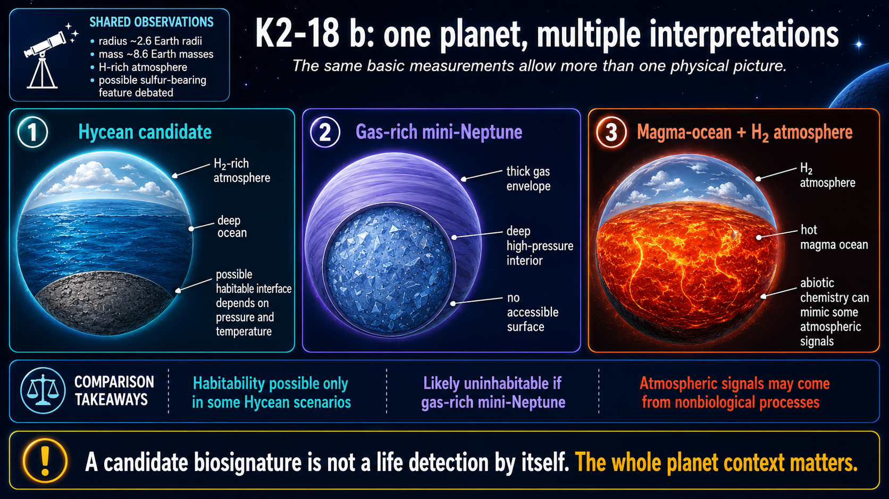
Fig. 10.14 K2-18 b is scientifically interesting because the same basic measurements do not force one unique interpretation. It could be a Hycean candidate with a hydrogen-rich atmosphere over a deep ocean, a gas-rich mini-Neptune with no accessible surface, or a hydrogen-atmosphere planet above a magma ocean. The habitability question depends on which physical picture is correct, so the possible DMS/DMDS feature must be interpreted in the context of the whole planet, not as a standalone life claim. Image credit: Instructor-created course media.#
Webb changed the discussion by observing K2-18 b at infrared wavelengths where important carbon-bearing molecules absorb. Madhusudhan et al. (2023) reported strong evidence for methane and carbon dioxide, along with a shortage of ammonia. That combination was interpreted as consistent with a possible Hycean atmosphere. The same observations included only a weak hint of dimethyl sulfide, or DMS. On Earth, DMS is strongly associated with marine organisms such as phytoplankton, so it is a possible biosignature gas. But “possible biosignature gas” is not the same as “life detected.”
The public controversy mostly comes from that distinction. In her 2023 discussion of the Webb result, Dr. Becky stresses that the methane detection was strong, while the DMS claim was weak and entangled with other molecules at the observed wavelengths. She also emphasizes the role of data pipelines: different ways of reducing Webb data can change the apparent strength of a molecular feature. That is not a scandal. It is part of doing frontier measurements near the edge of current technology.
The debate then became broader. Some researchers argued that K2-18 b could be a Hycean world, while others showed that different planet models can fit the data. For example, Shorttle et al. (2024) argued that a hydrogen atmosphere over a magma ocean could explain key chemical features, including the depletion of ammonia. Wogan et al. (2024) argued that the observations could also be explained by a gas-rich mini-Neptune with no habitable surface. In her 2024 follow-up, Dr. Becky uses those papers to make the central scientific point: one model fitting the data does not mean all other models are wrong.
Madhusudhan et al. (2025) reported new mid-infrared Webb/MIRI evidence for DMS and/or dimethyl disulfide, DMDS. Those molecules absorb more strongly at longer wavelengths than in the original near-infrared data, so the new observations were important. However, the interpretation still depends on statistical choices, model comparison, and which alternative molecules are included in the retrieval. Cool Worlds presents this controversy carefully by comparing the proponent view with skeptical responses. The useful takeaway for this course is not which side wins today. The useful takeaway is how many hoops a life claim must pass through.
There are at least three hoops. First, K2-18 b must actually be a habitable environment, probably in the Hycean sense. That remains debated because the planet could instead be a gas-rich mini-Neptune or a magma-ocean planet. Second, DMS or DMDS must actually be present in the atmosphere. That remains debated because the signal is subtle and depends on data reduction and model choices. Third, if DMS or DMDS is present, biology must be the best explanation. That is also not guaranteed. Even on Earth, calling a molecule a biosignature requires understanding possible nonbiological sources, photochemistry, delivery by impacts, and the broader planetary context.

Fig. 10.15 K2-18 b is a strong teaching example because the same spectrum can support a careful scientific statement and a misleading headline. Webb detected methane and carbon dioxide in the 2023 data, while DMS remained a candidate feature requiring further validation. Image credit: NASA Science, NASA, ESA, CSA, Ralf Crawford (STScI), Joseph Olmsted (STScI); science credit Nikku Madhusudhan (IoA); NASA media.#
Use this video as context for the K2-18 b controversy. Focus on the standards of evidence: what was detected, what remains uncertain, what counts as a biosignature candidate, and why scientists do not jump from a candidate molecule to confirmed life.
Checkpoint
Why is “possible DMS in an atmosphere” not the same claim as “life has been detected”?
K2-18 b should not be treated as a disappointment because the life claim is uncertain. It is an example of the scientific process working in real time. The atmosphere is interesting. The planet class is interesting. The possible molecule is interesting. But the honest conclusion is that we have a biosignature candidate, not confirmed biology.
10.4.5. How could we detect life on an exoplanet?#
None of our current exoplanet methods can confirm life by themselves. Astrometry, radial velocity, transit photometry, microlensing, and direct imaging can detect planets and measure properties. They do not scoop up cells, image organisms, or drill into ice. The search for life on exoplanets is therefore mostly a search for atmospheric or surface signs that are difficult to maintain without biology.
A future Earthlike planet detection would likely require combined evidence. Direct imaging could separate the planet’s light from the star. Brightness variations as the planet rotates could reveal surface contrast through albedo, the fraction of incoming light that a surface reflects. Ocean, land, ice, and clouds have different albedos, so a rotating planet may brighten and dim in ways that hint at surface geography. A low-resolution spectrum could estimate temperature by treating the planet approximately as a blackbody and could detect gases such as water vapor, carbon dioxide, ozone, methane, and oxygen.
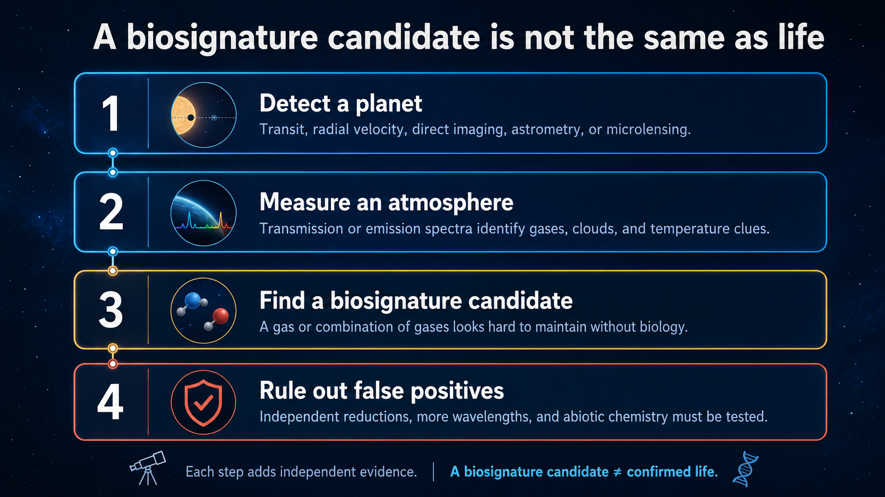
Fig. 10.16 A biosignature search is an evidence ladder. Planet detection comes first, atmospheric characterization comes next, and a possible biosignature must still survive false-positive testing before it can become a strong life claim. Image credit: Instructor-created course media.#
The most powerful atmospheric argument would involve chemical disequilibrium: gases that should react away unless some process keeps replenishing them. On Earth, oxygen is maintained mainly by photosynthesis, while methane has biological and nonbiological sources. Oxygen alone is not perfect. Methane alone is not perfect. A combination such as oxygen plus methane in the right planetary context could be more compelling because the gases react with each other and require replenishment.
This is why biosignature work is less like finding a label that says life and more like building a legal case. A molecule must be detected robustly, placed in a planetary context, and checked against false positives. A single gas may be intriguing, but the stronger argument usually comes from a pattern: the star, orbit, temperature, atmosphere, surface or ocean environment, and chemistry all have to make sense together.
Light travel time does not usually change the interpretation in the way science fiction sometimes suggests. If a planet is hundreds or thousands of light-years away, we see it as it was hundreds or thousands of years ago. That is long compared with human lifetimes but short compared with the hundreds of millions of years over which major biological eras unfold. The harder issue is stellar age. A young planet may have an atmosphere that looks nothing like modern Earth even if life eventually becomes possible.
Checkpoint
Why is a combination of gases usually more persuasive than one possible biosignature gas by itself?
For the foreseeable future, exoplanet life detection will be probabilistic and contextual. We will need the planet’s star, orbit, radius, mass, temperature, atmospheric composition, and possible false-positive pathways. A headline can be short. A credible scientific claim cannot be.
10.4.6. Are Earthlike planets rare or common?#
The final question is not simply how many planets exist. It is how many planets combine the right ingredients, locations, histories, and long-term stability. Some researchers have proposed a galactic habitable zone: a region of the Milky Way where metallicity is high enough to build rocky planets but the environment is not so crowded or violent that nearby supernovae frequently disrupt habitability. This is a useful concept, but it should not be treated as a sharp ring painted on the galaxy.
There is counter-evidence to any overly strict galactic habitable zone. Kepler found planets around stars with a range of metallicities, including metal-poor systems. We also do not know how life responds to nearby supernovae in a general way. Radiation could be harmful, but increased mutation rates can also affect evolution. The point is not that supernovae are good for life. The point is that the biological consequences are not captured by one simple distance rule.
Impact history is another possible filter. Earth had a high impact rate early in Solar System history, and some impactors were large enough to reshape environments. Yet impacts also delivered material, excavated crust, and created hydrothermal systems. A planet with constant sterilizing impacts would be a poor candidate, but a planet with no impacts at all may not be the right comparison either.
Climate stability may be one of Earth’s more important advantages. Venus and Mars both experienced climate catastrophes in different directions. Venus lost habitability to runaway greenhouse conditions. Mars lost the ability to maintain stable surface liquid water. Earth has had severe climate swings, including snowball episodes, but remained habitable over billions of years. Plate tectonics and the carbon cycle probably helped regulate climate over long timescales.
The Moon is sometimes added to the list of Earth’s lucky features because it helps stabilize Earth’s obliquity. That statement needs care. A large moon can help, but it is not automatically required for habitability. Lissauer et al. (2012) showed that a moonless Earth would not necessarily have had catastrophic obliquity variations under all assumptions. The Moon may be helpful without being a universal requirement.
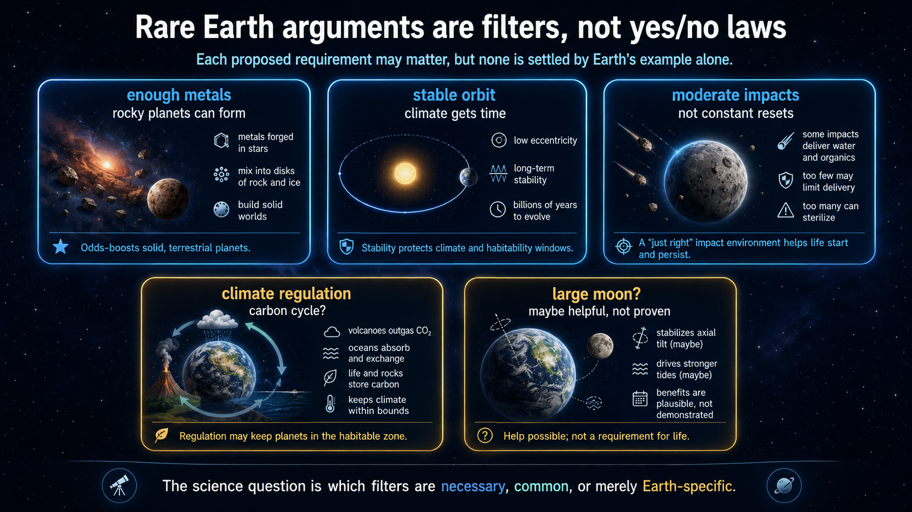
Fig. 10.17 Rare Earth arguments are best treated as proposed filters. Some may be necessary, some may only improve the odds, and some may be Earth-specific details that are not required elsewhere. Image credit: Instructor-created course media.#
Checkpoint
Why should “Earth has this feature” not automatically become “all habitable planets must have this feature”?
The honest answer is that Earthlike planets could be common, rare, or common in some ways and rare in others. We now know planets are common. We know small planets are common. We know some small planets orbit in habitable zones. We do not yet know how often those planets have the right atmospheres, climates, geologic cycles, impact histories, and biospheres. That uncertainty is exactly why exoplanets are now central to astrobiology.
The careful position is not optimism or pessimism. It is measurement. Each proposed Rare Earth filter turns into an observational question: How often do rocky planets form? How often do they keep atmospheres? How often do they avoid runaway greenhouse or permanent global freezing? How often do they have long-lived geochemical cycles? How often do biospheres alter atmospheres in detectable ways? Exoplanet astronomy is now beginning to answer the first few questions and is preparing the tools needed for the harder ones.
10.5. Before moving on#
Check your understanding
Before continuing, make sure you can answer these questions in your own words:
Why do stellar mass, lifetime, radiation type, and metallicity all matter when deciding whether a star is a good host for habitable planets?
How do the major exoplanet detection methods differ in what they can measure directly and what they must infer indirectly?
Why do mass and radius together provide better planet classification than either mass or radius alone?
What makes binary-star planets scientifically plausible but dynamically more complicated than planets around single stars?
Why is the habitable zone useful even though subsurface habitats, free-floating planets, and exotic worlds may exist outside it?
What steps would be needed to move from a biosignature candidate to a credible claim for life on an exoplanet?
Why does K2-18 b provide a useful lesson in scientific caution rather than a confirmed discovery of life?
Which possible “rare Earth” requirements seem most convincing to you, and which ones seem least settled by current evidence?
These questions are not a summary of the chapter. They are a check on whether the main ideas are connected in your mind.